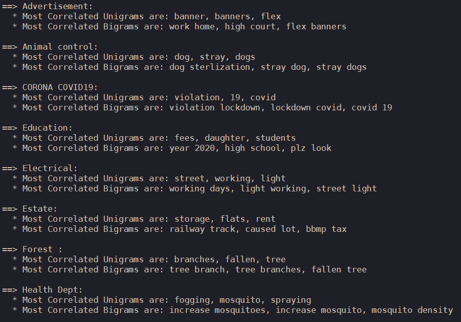
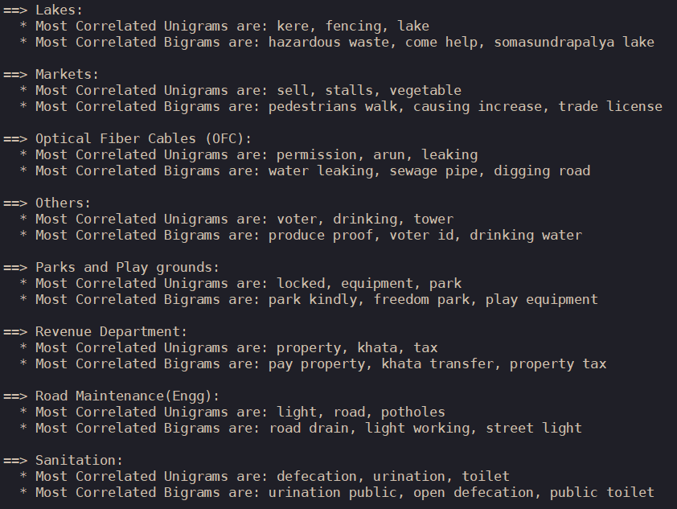
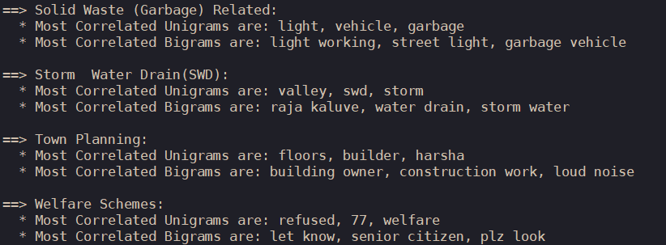
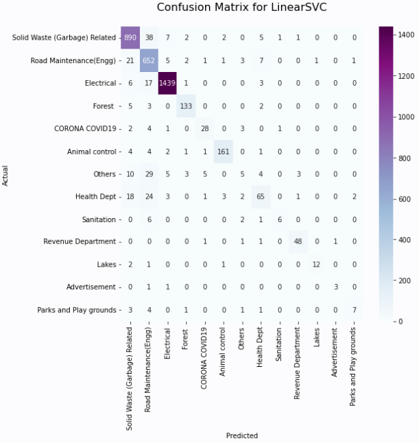

Analyzing over 100,000 complaints from the Silicon Valley of India.
text_mining
machine_learning
Author
Nathan States
Published
January 22, 2023
Aerial view of Bengaluru, India.
Results
Over 80% of complaints filed were related to street lights not working, road maintenance, or garbage collection issues.
Of the four classification models, the linear support vector classifier performed the best, recording 88.773% accuracy. The top three models all performed similarly as well, though, all falling within three percentage points.
Improvements were made by increasing the number of stop words, as well as combining smaller categories into larger ones. Using LinearSVC, these changes led to a 3.214% increase, ultimately recording an accuracy of 91.987%.
Further improvements can be made by adding to the stop word list, changing the contents of the “Others” category, and adjusting the downsampling of the model.
Background
Text data can be difficult to analyze in large amounts, but raw text is invaluable in numerous different ways. Using simple Python libraries, modern machine learning models can parse thousands of rows in seconds, which can be used for a variety of purposes. One of the most common of these is classification, or categorizing text into different groups.
The Bruhat Bengaluru Mahangara Palike (BBMP) - an administrative body that oversees city development in Bengaluru, the largest tech city in India - created a web application that allows citizens to file grievances with the city. From February 8th, 2020 to February 21st, 2021, a total of 105,956 complaints were filed to BBMP, or about 280 a day. Exploring this data not only provides insight into the most common problems facing this city (or at least the complaints most likely to be sent), but also presents an opportunity to quantify and categorize them.
In the dataset, complaints have been manually categorized by the administrators who oversee the app at BBMP, but this is extremely inefficient. Usefully, though, the developers have already created categories that they felt best sorted the data, which means, assuming complaints don’t change substantially in the future, we can train a machine learning model that performs this task automatically. This could save hours and hours of time.
Because the categories are already defined, this will be a supervised classification model.
Data Wrangling
Data wrangling and EDA done using R.
First, we import the data and the libraries we will be using.
The admins at BBMP keep their data neat and tidy, so there’s not many problems to fix. There are a couple things to consider, however.
The first issue is that some descriptions are extremely short, making classifying them accurately near impossible. We can limit the number of characters that a complaint must have, though the appropriate number of rows to remove is debatable. Ideally, we don’t want to exclude too much of the data while still removing descriptions too short to be properly categorized.
Using str_length from the stringr package, we see 5,392 complaints contained fewer than 12 characters, meaning removing them would still preserve 95% of the original data. Using filter from dplyr, we can keep all complaints containing more than 12 characters.
Show code
# Counting number of rows grievances %>%filter(str_length(description) <12) %>%count()
# A tibble: 1 x 1
n
<int>
1 5392
Show code
# Removing those rows grievances <- grievances %>%filter(str_length(description) >12)
The other consideration is whether the existing categories accurately reflect the data or not. It’s possible certain similarities between different categories would better be combined into one, and likewise, single categories that should be multiple ones. These changes might not only provide a better description of the data, but improve accuracy in the long run.
For now, we will leave the original categories intact and proceed, but future models may benefit from this step.
On most days, grievances would vary between 200 to 400 a day, with some spikes in September onwards, including a massive single-day one in March of 742. On average, 280 complaints were filed each day.
Because complaints don’t seem to fluctuate significantly, we can likely assume that the day the grievance was filed isn’t indicative of its contents.
81.89% of total grievances were categorized as electrical, solid waste or garbage related, or road maintenance. The next three largest categories make up an additional 11.09%, meaning the remaining categories have less than 1,350 occurrences combined.
Note that this is not due to a lack of categories; in fact, there are a total of 20 categories in the data.
Show code
length(unique(grievances$category))
[1] 20
Large imbalances like this are important to consider when building machine learning models. Algorithms are specifically programmed to achieve the highest accuracy regardless of original purposes, and they tend to overestimate larger categories. If a model discovers it can restrict itself to three options while still recording 80%+ accuracy, it will almost always do so.
This means, though, machine learning models will tend to ignore minor categories, because - using our current data as an example - predicting a category outside the top three has an inherent 81.89% fail rate, so this will need to be addressed when creating the models.
There is a question as to whether certain smaller categories should exist at all, though.
# A tibble: 5 x 2
category total
<chr> <int>
1 Education 20
2 Estate 75
3 Markets 38
4 Optical Fiber Cables (OFC) 62
5 Welfare Schemes 28
Five categories have less than 100 complaints total, including two which have less than thirty. This is far too few complaints to reliably build a model with, especially considering we haven’t split the data yet.
While the model being built is only to predict the main categories, by viewing subcategories, we see over 35% of total complaints were related specifically to street lights not working, comprising almost all of the electrical category. Solid waste related problems is divided into two subcategories; garbage vehicle not arriving, and “Garbage dump” (whatever that means). Meanwhile, road maintenance has been divided into three subcategories, those being potholes, road side drains, and debris removal.
Seeing as over a third of the data was subcategorized as street lights not working, we see that they are the most common words across all the complaints.
Missing from that is the word not, but this is because we removed all stop words from the data. Put simply, stop words are words that don’t add anything to the process of categorizing text. They usually include words like he, she, there, they, I, and so on, which is why they don’t appear in the chart.
The stop words included in the tidytext package (and the ones used in the function above) are meant to apply universally, but if you look closely at the word cloud, there are several words that almost certainly don’t apply to our problem. These include terms like please, kindly, last request, sir, and individual numbers like 1, 2, and 3. While there might exist some incidental correlation between some of these words and their respective categories (perhaps citizens filing animal control complaints are nicer on average, so the term please could be used to identify those complaints more accurately, for example), it’s likely this will just throw off our model’s accuracy in the long run.
From the EDA, the primary factors that should be considered when building the models are:
Account for imbalances in number of occurrences per category.
Reduce the number of categories by combining them into existing ones.
Add additional stop words.
MLE Models
Preparing the Data
We’ll opt to use Python for creating the MLE models, as Python libraries are generally more efficient and developed than their R counterparts. Because creating models is computer intensive, the code here has been evaluated locally and presented here for demonstration.
To start, we’ll import the necessary libraries and load the data using pandas. The models here will be built using sklearn.
Show code
import numpy as npimport pandas as pdimport matplotlib.pyplot as pltimport seaborn as sns from sklearn.feature_extraction.text import TfidfVectorizerfrom sklearn.feature_selection import chi2from sklearn.model_selection import train_test_splitfrom sklearn.naive_bayes import MultinomialNBfrom sklearn.linear_model import LogisticRegressionfrom sklearn.ensemble import RandomForestClassifierfrom sklearn.svm import LinearSVCfrom sklearn.model_selection import cross_val_scorefrom sklearn import metricsdf = pd.read_csv("bengaluru-grievances.csv")
One of the packages imported here is TfidfVectorizer, which will be the algorithm used to create the models. I’ll explain why I specifically chose this package later on.
Here, I quickly apply the earlier data wrangling techniques by removing complaints less than 12 characters, this time using Python syntax.
Show code
# Reduce Character Limit character_limit = (df["description"].str.len() >12)df = df.loc[character_limit]
A model based on over 100,000 observations is extremely hardware intensive, and it causes my laptop to overheat a lot. For practical purposes, we’ll cut down on our data by choosing 15,000 rows at random.
Show code
df = df.sample(15000, random_state =1).copy()
If we wanted to get another random 15,000 rows, we could change the random_state = 1 argument to any other number, like 42, 671, or 7.
With no other changes to be made, we can begin creating the models.
Text Preprocessing
There are several methods to building models, but the simplest method is to create a new column in our data - we’ll call it category_id - that is a factor variable of all existing categories in our data. This essentially amounts to assigning each category a number (Electrical = 0, Road Engineering = 1, etc), which is necessary for getting our model to run properly, as sklearn will not understand strings as factors.
Next, the description column (which stores the text for grievances) needs to be converted to vectors using a chosen algorithm. The algorithm chosen here is Term Frequency - Inverse Document Frequency (TF-IDF), which is the product of \(TF\) and \(IDF\) scores. This is the TfidfVectorizer function that we imported earlier.
It’s useful to present these terms mathematically.
Term Frequency: \[ TF = \frac{Number \hspace{0.15cm} of \hspace{0.15cm} times \hspace{0.15cm} a \hspace{0.15cm} term \hspace{0.15cm} appears \hspace{0.15cm} in \hspace{0.15cm} the \hspace{0.15cm} description}{Total \hspace{0.15cm} number \hspace{0.15cm} of \hspace{0.15cm} words \hspace{0.15cm} in \hspace{0.15cm} the \hspace{0.15cm} description} \]
Inverse Document Frequency: \[ IDF = log(\frac{Number \hspace{0.15cm} of \hspace{0.15cm} rows \hspace{0.15cm} in \hspace{0.15cm} a \hspace{0.15cm} data}{Number \hspace{0.15cm} of \hspace{0.15cm} rows \hspace{0.15cm} a \hspace{0.15cm} term \hspace{0.15cm} appears \hspace{0.15cm} in \hspace{0.15cm} a \hspace{0.15cm} data}) \]
TF-IDF: \[ TF-IDF = TF * IDF \]
The reason for choosing this algorithm was for the \(IDF\) component, which downsamples words that appear frequently across all complaints, while adding extra weight to terms that appear less often.
Analyzing it mathematically: as the denominator of the \(IDF\) variable increases, the closer it rapidly (more precisely, exponentially) approaches zero. Let \(N\) represent the total number of rows in the data, and let \(t\) represent a chosen term. If a certain word were to appear in every single complaint, then we would have \(IDF(N, t) = log(\frac{N}{t}) = log(\frac{N}{N}) = log(1) = 0\), which would mean that when calculating \(TF-IDF\), that specific word would have absolutely no weight attached to it when classifying complaints.
Now; why do this? As discussed previously during the EDA section, almost 82% of all complaints fell into exactly three categories. Classification models will tend to stick to only a few categories, struggling to identify minor categories. While this may record higher accuracy scores on average, doing so means minor categories will rarely be classified at all, and in some instances, could lower overall accuracy if skew is significant enough. By ranking terms on an exponentially decreasing scale, we hope to reduce this issue.
We first setup our TfidfVectorizer and assign it to a variable, tfidf.
Show code
tfidf = TfidfVectorizer( sublinear_tf =True, # Set term frequency to logarithmic scale min_df =5, # Remove terms that appear less than 'min_df' times ngram_range = (1, 2), # Unigrams and bigrams are considered stop_words ='english'# Use common English stop words)
From here, we can begin building our models, but before doing so, let’s see what the most common terms were for each category.
To do so, we use tfidf.get_feature_names_out() on each category and assign that to a variable that we’ll call feature_names. This contains all of the most common words associated with each category, which we then split into two separate lists for unigrams and bigrams (fancy words for “one word” and “two words”). From there, we print to console the \(N = 3\) most common terms from each list. We wrap all this in a for loop, automatically progressing through each category.
Show code
# Defaults features = tfidf.fit_transform(df.description).toarray()labels = df.category_idN =3# For Loopfor category, category_id insorted(category_to_id.items()): features_chi2 = chi2(features, labels == category_id) indices = np.argsort(features_chi2[0]) feature_names = np.array(tfidf.get_feature_names_out())[indices] unigrams = [v for v in feature_names iflen(v.split(' ')) ==1] bigrams = [v for v in feature_names iflen(v.split(' ')) ==2]print("\n==> %s:"%(Product)) # Space for formattingprint(" * Most Correlated Unigrams are: %s"%(', '.join(unigrams[-N:])))print(" * Most Correlated Bigrams are: %s"%(', '.join(bigrams[-N:])))
As this part was performed offline, here is the output in screenshots.



The results are largely what we would expect, though there are some things to note.
Some common phrases that appear for certain categories seemingly have nothing to do with them, such as the terms “77”, “kindly”, and “plz look”, which is one of the most common bigrams for both “Education” and “Welfare Schemes.” Remember, these were the categories that had less than 100 observations total. When we split the data to grab 15,000 random rows, these categories were split even further, which is probably why these nonsense phrases appear.
Building the Models
To begin, we first split the data into a 75:25 training and test split. The model will “learn” how to classify grievances based on the training data, and then it will “test” its accuracy on the remaining 25%.
Show code
# We define them here as independent variables X = df["description"]y = df["category"]X_train, X_test, y_train, y_test = train_test_split(X, y, test_size =0.25, random_state =0)
There are several different models to choose from, but it’s hard to know which will perform best before actually building them. That’s why we’ll test several models simultaneously by storing them in a list and looping through each model.
After, we apply each model to the training data and record the results. The accuracy of each model is inherently random, as model performance is somewhat due to chance, so we’ll use a five-fold cross-validation and take the mean average of each iteration to get a more balanced result. We store the results in a pandas dataframe for analysis.
Show code
# Copy and pasted from before features = tfidf.fit_transform(df.description).toarray()labels = df.category_idCV =5# Number of cross-validationscv_df = pd.DataFrame(index =range(CV *len(models))) # CV dataframeentries = [] # Array for storing model results for model in models: model_name = model.__class__.__name__ accuracies = cross_val_score(model, features, labels, scoring='accuracy', cv=CV)for fold_idx, accuracy inenumerate(accuracies): entries.append((model_name, fold_idx, accuracy))cv_df = pd.DataFrame(entries, columns=['model_name', 'fold_idx', 'accuracy'])
Results
Because we used a five-fold cross-validation, we have a total of 20 accuracy results - five for each model. We grab the mean accuracy and standard deviation for each model, storing them into a list.
The top three models all performed similarly as well, all falling within 3.1% percentage points. The Linear Support Vector Classifier performed the best among the three, while the Random Forest performed atrociously. Standard deviation among the top three remained fairly low, but especially for multinomial naive bayes.
Improvements
We will focus model improvement on the Linear SVC because it performed the best.
As a reminder, these were the three main considerations before going in.
Account for imbalances in number of occurrences per category.
Consider reducing number of categories.
Consider adding additional stopwords.
To get a better idea of how our model performed, we will plot a confusion matrix, which displays the total number of attempts our classification model made along with how many were accurately categorized.
On the diagonal are the number of rows that the model correctly predicted for each category. The horizontals and verticals represent the number of incorrect guesses, with the vertical representing incorrect guesses for that specific category. For example, the model correctly classified 1,484 complaints as “Electrical,” incorrectly classified 2 as “Electrical” when they should of been classified as “COVID-19,” and classified 10 as “Road Maintenance” when they should of been classified as “Electrical.”
Modifications
Looking at the chart, the top three categories dominate the total number of occurrences, comprising 2,969 rows out of 3,750 in our test data. Most of the incorrect predictions appear in the vertical of each of these three columns, meaning the model was incorrectly classifying complaints as them often. Even though we chose an algorithm to specifically downsample those categories, our model still has a tendency to over-predict them.
A few categories have 12 or fewer observations: those being Markets, Estate, OFC, Welfare Schemes, Advertisement, Education, Town Planning, Lakes, and Parks and Playgrounds. Converting these will likely improve accuracy considering how poorly our model did at predicting them, but there isn’t clear category to merge them with. Many of these categories seem to have been falsely labeled as “Road Maintenance.” While converting these columns over to this might lead to higher accuracy, it doesn’t really make any sense in this case, and likely would hurt performance in the future.
We could reassign these variables to “Others,” but that category performed abysmally, only correctly predicting 3 out of 43 complaints. On one hand, moving them there probably won’t hurt, but it likely won’t improve “Others” result either.
Lakes and Advertisements, which the model predicted quite a few correctly, will be left untouched for now. For the remaining categories under 12 test observations, they will be merged in with Others.
Show code
# Read in Data | Copy and Paste from Abovedf = pd.read_csv("bengaluru-grievances.csv")pd.DataFrame(df.category.unique()).values character_limit = (df["description"].str.len() >12)df = df.loc[character_limit]df = df.sample(15000, random_state =2).copy() # Select New Rows # Convert Columns df["category"] = df["category"].replace({'Markets': 'Others'})df["category"] = df["category"].replace({'Estate': 'Others'})df["category"] = df["category"].replace({'Welfare Schemes': 'Others'})df["category"] = df["category"].replace({'Education': 'Others'})df["category"] = df["category"].replace({'Town Planning': 'Others'})
“Optical Fiber Cables” and “Storm Water Drains,” though, are directly related to “Road Maintenance,” and if we look at the chart, that’s what the model ended up incorrectly guessing the most of. For these categories, it makes more sense to convert them over to “Road Maintenance” as opposed to “Others.”
While we’ve converted the total number of categories down from 20 to 13, we’ve only changed a total of 45 test rows. Even if the improved model were able to correctly predict all these observations now, we would only see an improvement of 1.2%. It’s certainly not insignificant, but hardly substantial. Improving our stop word list, on the other hand, will hypothetically improve the accuracy of the model overall.
Recall earlier when we found the most common unigrams and bigrams for each category. Several terms that appeared most often had little or nothing to do with their respective grievances, and should be able to be removed while maintaining or improving original accuracy.
The original stop word list comes from another function in sklearn, and already contains over 300 words. We want to keep those words while adding to it, so we will union them together in a new list and use it in TfidfVectorizer.
Show code
# Import Function from sklearn.feature_extraction import text# Add Stop Words stop_words = text.ENGLISH_STOP_WORDS.union(["please", "plz", "look", "help", "causing", "coming", "kindly", "refused", "senior", "help", "one", "two", "three", "also", "77", "1", "2", "3", "since"])# TfidfVectorizer tfidf = TfidfVectorizer( sublinear_tf =True, # Set term frequency to logarithmic scale min_df =5, # Remove terms that appear less than 'min_df' times ngram_range = (1, 2), # Keep unigrams and bigrams stop_words = stop_words # Use custom stop words )
Redo Text Preprocessing
We have to redo the text preprocessing from earlier, so this is all copy-and-paste from before.
We don’t need the complicated for loop from before because we only have one model this time. Therefore, we simply use cross_val_score as we did before and print the results to console.
Our new Linear SVC model was able to achieve 91.987% accuracy with an average standard deviation of 0.282% across five iterations. That’s an improvement of 3.214% while also reducing variance within model performance by 0.086%.
Another way to look at these refinements; out of a possible 3,750 complaints, our model was able to correctly classify an additional 120 complaints, going from 3,328 correct predictions to 3,449.

Conclusions
Once again, the top three categories performed similarly as well as before. Road maintenance was able to correctly predict an additional 63 complaints on this iteration. These three categories also continue to make up most of the incorrect predictions.
The “Others” categories once again performed dreadfully, only recording an additional two correct predictions despite even more chances. Given it’s a category meant to be all-emcompassing, it probably makes sense to manually reclassify those comaplaints into new or existing categories.
Minor categories saw little or no improvement. The “Health Dept” was the only category that performed worse, dropping from 69.7% to 54.6% accuracy. The model incorrectly chose “Solid Waste” and “Road Maintenance” much more often than the previous model did, though it’s unclear as to why this is.
Increasing the stop word list seems to have improved accuracy overall. A more thorough list and additional adjustments might boost performance slightly more.
Source
You can check out the Python source code for the MLE model here. Download the full dataset here.
Source Code
---title: "Bengaluru Text Mining"description: 'Analyzing over 100,000 complaints from the Silicon Valley of India.'author: "Nathan States"date: "01/22/2023"categories: [text_mining, machine_learning]format: html: code-fold: true code-summary: "Show code" toc: true toc-location: right code-tools: true---<br>## Results * Over **80%** of complaints filed were related to street lights not working, road maintenance, or garbage collection issues. * Of the four classification models, the linear support vector classifier performed the best, recording **88.773%** accuracy. The top three models all performed similarly as well, though, all falling within three percentage points.* Improvements were made by increasing the number of stop words, as well as combining smaller categories into larger ones. Using LinearSVC, these changes led to a 3.214% increase, ultimately recording an accuracy of **91.987%**. * Further improvements can be made by adding to the stop word list, changing the contents of the "Others" category, and adjusting the downsampling of the model. ## BackgroundText data can be difficult to analyze in large amounts, but raw text is invaluable in numerous different ways. Using simple Python libraries, modern machine learning models can parse thousands of rows in seconds, which can be used for a variety of purposes. One of the most common of these is *classification*, or categorizing text into different groups. The *Bruhat Bengaluru Mahangara Palike* (BBMP) - an administrative body that oversees city development in Bengaluru, the largest tech city in India - created a web application that allows citizens to file grievances with the city. From February 8th, 2020 to February 21st, 2021, a total of **105,956** complaints were filed to BBMP, or about 280 a day. Exploring this data not only provides insight into the most common problems facing this city (or at least the complaints most likely to be sent), but also presents an opportunity to quantify and categorize them. In the dataset, complaints have been manually categorized by the administrators who oversee the app at BBMP, but this is extremely inefficient. Usefully, though, the developers have already created categories that they felt best sorted the data, which means, assuming complaints don't change substantially in the future, we can train a machine learning model that performs this task automatically. This could save hours and hours of time.Because the categories are already defined, this will be a **supervised** classification model. ## Data WranglingData wrangling and EDA done using `R`. First, we import the data and the libraries we will be using. ```{r echo=TRUE, message=FALSE, warning=FALSE}# Load Librarieslibrary(tidyverse) library(tidymodels)library(tidytext)library(echarts4r)library(here)library(lubridate)library(wordcloud2)library(reticulate)# Set Directory here::set_here()# Import Datagrievances <- readr::read_csv("bengaluru-grievances.csv")```The admins at BBMP keep their data neat and tidy, so there's not many problems to fix. There are a couple things to consider, however. The first issue is that some descriptions are extremely short, making classifying them accurately near impossible. We can limit the number of characters that a complaint must have, though the appropriate number of rows to remove is debatable. Ideally, we don't want to exclude too much of the data while still removing descriptions too short to be properly categorized. Using `str_length` from the `stringr` package, we see 5,392 complaints contained fewer than 12 characters, meaning removing them would still preserve 95% of the original data. Using `filter` from `dplyr`, we can keep all complaints containing more than 12 characters. ```{r, echo=TRUE, message=FALSE, warning=FALSE}# Counting number of rows grievances %>%filter(str_length(description) <12) %>%count() ``````{r, echo=TRUE, message=FALSE, warning=FALSE}# Removing those rows grievances <- grievances %>%filter(str_length(description) >12)```The other consideration is whether the existing categories accurately reflect the data or not. It's possible certain similarities between different categories would better be combined into one, and likewise, single categories that should be multiple ones. These changes might not only provide a better description of the data, but improve accuracy in the long run. For now, we will leave the original categories intact and proceed, but future models may benefit from this step. ## Exploratory Data Analysis Interactive charts created using `echarts4r`. ### Number of Grievances By Day ```{r, echo=TRUE, message=FALSE, warning=FALSE}# Set Theme e_common(font_family ="Georgia")# Chart grievances %>%group_by(created_at =as.Date(created_at)) %>%summarise(Total =n()) %>%e_charts(created_at) %>%e_line(Total, symbol ="none") %>%e_x_axis(axisLabel =list(interval =0)) %>%e_title(text ="Total number of grievances by day",subtext ="Data: BBMP" ) %>%e_color("#0a32d2", background ="rgb(0, 0, 0, 0)" ) %>%e_legend(show =FALSE) %>%e_tooltip(backgroundColor ="rgba(20, 20, 20, 0.5)",borderColor ="rgba(0, 0, 0, 0)",textStyle =list(color ="#ffffff" ),trigger ="axis" )```On most days, grievances would vary between 200 to 400 a day, with some spikes in September onwards, including a massive single-day one in March of 742. On average, 280 complaints were filed each day. Because complaints don't seem to fluctuate significantly, we can likely assume that the day the grievance was filed isn't indicative of its contents. ### Grievances by Category```{r, echo=TRUE}grievances %>%group_by(category) %>%summarise(Total =n()) %>%arrange(desc(Total)) %>%filter(Total >1000) %>%slice(1:10) %>%e_charts(category) %>%e_bar(Total) %>%e_x_axis(axisLabel =list(interval =0, rotate =45,fontSize =9.25 ) ) %>%e_title(text ="Most common grievances by category", subtext ="Only categories above 1,000 visible" ) %>%e_legend(show =FALSE) %>%e_labels(show =FALSE) %>%e_color("#8c5ac8", background ="rgb(0, 0, 0, 0)" ) %>%e_tooltip(trigger ="axis",backgroundColor ="rgba(20, 20, 20, 0.5)",borderColor ="rgba(0, 0, 0, 0)",textStyle =list(color ="#ffffff" ) )```81.89% of total grievances were categorized as electrical, solid waste or garbage related, or road maintenance. The next three largest categories make up an additional 11.09%, meaning the remaining categories have less than 1,350 occurrences combined. Note that this is *not* due to a lack of categories; in fact, there are a total of 20 categories in the data. ```{r}length(unique(grievances$category))```Large imbalances like this are important to consider when building machine learning models. Algorithms are specifically programmed to achieve the highest accuracy regardless of original purposes, and they tend to overestimate larger categories. If a model discovers it can restrict itself to three options while still recording 80%+ accuracy, it will almost always do so. This means, though, machine learning models will tend to ignore minor categories, because - using our current data as an example - predicting a category outside the top three has an inherent 81.89% *fail* rate, so this will need to be addressed when creating the models. There is a question as to whether certain smaller categories should exist at **all**, though. ```{r}grievances %>%group_by(category) %>%summarise(total =n()) %>%filter(total <100)```Five categories have less than 100 complaints total, including two which have less than thirty. This is far too few complaints to reliably build a model with, especially considering we haven't split the data yet.### Grievances by Subcategory ```{r}grievances %>%group_by(subcategory) %>%summarise(Total =n()) %>%arrange(Total) %>%filter(Total >1000) %>%e_charts(subcategory) %>%e_bar(Total) %>%e_legend(show =FALSE) %>%e_title(text ="Most common grievances by subcategory", subtext ="Only categories above 1,000 visible" ) %>%e_color("#8c5ac8", background ="rgb(0,0,0,0)") %>%e_flip_coords() %>%e_tooltip(trigger ="axis",backgroundColor ="rgba(20, 20, 20, 0.5)",borderColor ="rgba(0, 0, 0, 0)",textStyle =list(color ="#ffffff" ) )```While the model being built is only to predict the main categories, by viewing subcategories, we see over 35% of total complaints were related specifically to street lights not working, comprising almost all of the electrical category. Solid waste related problems is divided into two subcategories; garbage vehicle not arriving, and "Garbage dump" (whatever that means). Meanwhile, road maintenance has been divided into three subcategories, those being potholes, road side drains, and debris removal.### Most Common Complaint Words We first have to get the 50 most common words...```{r, message=FALSE, warning=FALSE}tidy <- grievances %>%unnest_tokens(word, description) %>%anti_join(get_stopwords()) %>%count(word) %>%arrange(desc(n)) %>%slice(1:50)```Then chart them using `wordcloud2`. ```{r}wordcloud2( tidy,color =rep_len(c("#8c5ac8", "#0b0d21", "#0a32d2"), nrow(tidy)),backgroundColor ="#fcfcfc")```Seeing as over a third of the data was subcategorized as street lights not working, we see that they are the most common words across all the complaints.Missing from that is the word *not*, but this is because we removed all **stop words** from the data. Put simply, stop words are words that don't add anything to the process of categorizing text. They usually include words like *he*, *she*, *there*, *they*, *I*, and so on, which is why they don't appear in the chart. The stop words included in the `tidytext` package (and the ones used in the function above) are meant to apply universally, but if you look closely at the word cloud, there are several words that almost certainly don't apply to our problem. These include terms like *please*, *kindly*, *last request*, *sir*, and individual numbers like *1*, *2*, and *3*. While there might exist some incidental correlation between some of these words and their respective categories (perhaps citizens filing animal control complaints are nicer on average, so the term *please* could be used to identify those complaints more accurately, for example), it's likely this will just throw off our model's accuracy in the long run. ---From the EDA, the primary factors that should be considered when building the models are: 1. Account for imbalances in number of occurrences per category. 2. Reduce the number of categories by combining them into existing ones. 3. Add additional stop words. ## MLE Models ### Preparing the Data We'll opt to use Python for creating the MLE models, as Python libraries are generally more efficient and developed than their R counterparts. Because creating models is computer intensive, the code here has been evaluated locally and presented here for demonstration.To start, we'll import the necessary libraries and load the data using `pandas`. The models here will be built using `sklearn`. ```{python, eval=FALSE, echo=TRUE, warning=FALSE}import numpy as npimport pandas as pdimport matplotlib.pyplot as pltimport seaborn as sns from sklearn.feature_extraction.text import TfidfVectorizerfrom sklearn.feature_selection import chi2from sklearn.model_selection import train_test_splitfrom sklearn.naive_bayes import MultinomialNBfrom sklearn.linear_model import LogisticRegressionfrom sklearn.ensemble import RandomForestClassifierfrom sklearn.svm import LinearSVCfrom sklearn.model_selection import cross_val_scorefrom sklearn import metricsdf = pd.read_csv("bengaluru-grievances.csv")```One of the packages imported here is `TfidfVectorizer`, which will be the algorithm used to create the models. I'll explain why I specifically chose this package later on. Here, I quickly apply the earlier data wrangling techniques by removing complaints less than 12 characters, this time using Python syntax. ```{python, eval=FALSE, echo=TRUE, warning=FALSE}# Reduce Character Limit character_limit = (df["description"].str.len() >12)df = df.loc[character_limit]```A model based on over 100,000 observations is **extremely** hardware intensive, and it causes my laptop to overheat a lot. For practical purposes, we'll cut down on our data by choosing 15,000 rows at random. ```{python, eval=FALSE, echo=TRUE, warning=FALSE}df = df.sample(15000, random_state =1).copy()```If we wanted to get another random 15,000 rows, we could change the `random_state = 1` argument to any other number, like 42, 671, or 7. With no other changes to be made, we can begin creating the models. ### Text Preprocessing There are several methods to building models, but the simplest method is to create a new column in our data - we'll call it **category_id** - that is a factor variable of all existing categories in our data. This essentially amounts to assigning each category a number (Electrical = 0, Road Engineering = 1, etc), which is necessary for getting our model to run properly, as `sklearn` will not understand strings as factors. ```{python, eval=FALSE, echo=TRUE, warning=FALSE}df['category_id'] = df["category"].factorize()[0]category_id_df = df[["category", "category_id"]].drop_duplicates()```Next, the description column (which stores the text for grievances) needs to be converted to vectors using a chosen algorithm. The algorithm chosen here is **Term Frequency - Inverse Document Frequency** (TF-IDF), which is the product of $TF$ and $IDF$ scores. This is the `TfidfVectorizer` function that we imported earlier. It's useful to present these terms mathematically.<br>**Term Frequency**: $$ TF = \frac{Number \hspace{0.15cm} of \hspace{0.15cm} times \hspace{0.15cm} a \hspace{0.15cm} term \hspace{0.15cm} appears \hspace{0.15cm} in \hspace{0.15cm} the \hspace{0.15cm} description}{Total \hspace{0.15cm} number \hspace{0.15cm} of \hspace{0.15cm} words \hspace{0.15cm} in \hspace{0.15cm} the \hspace{0.15cm} description} $$**Inverse Document Frequency**: $$ IDF = log(\frac{Number \hspace{0.15cm} of \hspace{0.15cm} rows \hspace{0.15cm} in \hspace{0.15cm} a \hspace{0.15cm} data}{Number \hspace{0.15cm} of \hspace{0.15cm} rows \hspace{0.15cm} a \hspace{0.15cm} term \hspace{0.15cm} appears \hspace{0.15cm} in \hspace{0.15cm} a \hspace{0.15cm} data}) $$**TF-IDF**: $$ TF-IDF = TF * IDF $$<br>The reason for choosing this algorithm was for the $IDF$ component, which **downsamples** words that appear frequently across all complaints, while adding extra weight to terms that appear less often. Analyzing it mathematically: as the denominator of the $IDF$ variable increases, the closer it rapidly (more precisely, *exponentially*) approaches zero. Let $N$ represent the total number of rows in the data, and let $t$ represent a chosen term. If a certain word were to appear in **every** single complaint, then we would have $IDF(N, t) = log(\frac{N}{t}) = log(\frac{N}{N}) = log(1) = 0$, which would mean that when calculating $TF-IDF$, that specific word would have absolutely no weight attached to it when classifying complaints. Now; why do this? As discussed previously during the EDA section, almost 82% of all complaints fell into exactly three categories. Classification models will tend to stick to only a few categories, struggling to identify minor categories. While this may record higher accuracy scores on average, doing so means minor categories will rarely be classified at all, and in some instances, could lower overall accuracy if skew is significant enough. By ranking terms on an exponentially decreasing scale, we hope to reduce this issue. We first setup our `TfidfVectorizer` and assign it to a variable, `tfidf`. ```{python, eval=FALSE, echo=TRUE, warning=FALSE}tfidf = TfidfVectorizer( sublinear_tf =True, # Set term frequency to logarithmic scale min_df =5, # Remove terms that appear less than 'min_df' times ngram_range = (1, 2), # Unigrams and bigrams are considered stop_words ='english'# Use common English stop words)```From here, we can begin building our models, but before doing so, let's see what the most common terms were for each category. To do so, we use `tfidf.get_feature_names_out()` on each category and assign that to a variable that we'll call **feature_names**. This contains all of the most common words associated with each category, which we then split into two separate lists for unigrams and bigrams (fancy words for "one word" and "two words"). From there, we print to console the $N = 3$ most common terms from each list. We wrap all this in a `for` loop, automatically progressing through each category. ```{python, eval=FALSE, echo=TRUE, warning=FALSE}# Defaults features = tfidf.fit_transform(df.description).toarray()labels = df.category_idN =3# For Loopfor category, category_id insorted(category_to_id.items()): features_chi2 = chi2(features, labels == category_id) indices = np.argsort(features_chi2[0]) feature_names = np.array(tfidf.get_feature_names_out())[indices] unigrams = [v for v in feature_names iflen(v.split(' ')) ==1] bigrams = [v for v in feature_names iflen(v.split(' ')) ==2]print("\n==> %s:"%(Product)) # Space for formattingprint(" * Most Correlated Unigrams are: %s"%(', '.join(unigrams[-N:])))print(" * Most Correlated Bigrams are: %s"%(', '.join(bigrams[-N:])))```As this part was performed offline, here is the output in screenshots. The results are largely what we would expect, though there are some things to note. Some common phrases that appear for certain categories seemingly have nothing to do with them, such as the terms "77", "kindly", and "plz look", which is one of the most common bigrams for both "Education" and "Welfare Schemes." Remember, these were the categories that had less than 100 observations **total**. When we split the data to grab 15,000 random rows, these categories were split even further, which is probably why these nonsense phrases appear. ### Building the Models To begin, we first split the data into a 75:25 training and test split. The model will "learn" how to classify grievances based on the training data, and then it will "test" its accuracy on the remaining 25%.```{python, eval=FALSE, echo=TRUE, warning=FALSE}# We define them here as independent variables X = df["description"]y = df["category"]X_train, X_test, y_train, y_test = train_test_split(X, y, test_size =0.25, random_state =0)```There are several different models to choose from, but it's hard to know which will perform best before actually building them. That's why we'll test several models simultaneously by storing them in a list and looping through each model.```{python, eval=FALSE, echo=TRUE, warning=FALSE}models = [ RandomForestClassifier(n_estimators =100, max_depth =5, random_state =0), LinearSVC(), MultinomialNB(), LogisticRegression(random_state =0) ]```Here, we stored in a list the following: + Random Forest Model+ Linear Support Vector Classifier Model+ Multinomial Naive Bayes Model+ Logistic Regression ModelAfter, we apply each model to the training data and record the results. The accuracy of each model is inherently random, as model performance is somewhat due to chance, so we'll use a five-fold cross-validation and take the mean average of each iteration to get a more balanced result. We store the results in a `pandas` dataframe for analysis. ```{python, eval=FALSE, echo=TRUE, warning=FALSE}# Copy and pasted from before features = tfidf.fit_transform(df.description).toarray()labels = df.category_idCV =5# Number of cross-validationscv_df = pd.DataFrame(index =range(CV *len(models))) # CV dataframeentries = [] # Array for storing model results for model in models: model_name = model.__class__.__name__ accuracies = cross_val_score(model, features, labels, scoring='accuracy', cv=CV)for fold_idx, accuracy inenumerate(accuracies): entries.append((model_name, fold_idx, accuracy))cv_df = pd.DataFrame(entries, columns=['model_name', 'fold_idx', 'accuracy'])```### Results Because we used a five-fold cross-validation, we have a total of 20 accuracy results - five for each model. We grab the mean accuracy and standard deviation for each model, storing them into a list. ```{python, eval=FALSE, echo=TRUE, warning=FALSE}mean_accuracy = cv_df.groupby('model_name').accuracy.mean()std_accuracy = cv_df.groupby('model_name').accuracy.std()accuracy = pd.concat([mean_accuracy, std_accuracy], axis=1, ignore_index=True)accuracy.columns = ['Mean Accuracy', 'Standard Deviation']accuracy```| Model | Mean Accuracy | Standard Deviation ||---------------------|---------------|--------------------|| Linear SVC | 88.773% | 0.368% || Logistic Regression | 87.767% | 0.433% | | Multinomial NB | 85.720% | 0.117% | | Random Forest | 66.213% | 1.411% | The top three models all performed similarly as well, all falling within 3.1% percentage points. The Linear Support Vector Classifier performed the best among the three, while the Random Forest performed atrociously. Standard deviation among the top three remained fairly low, but especially for multinomial naive bayes. ## Improvements We will focus model improvement on the Linear SVC because it performed the best. As a reminder, these were the three main considerations before going in. 1. Account for imbalances in number of occurrences per category. 2. Consider reducing number of categories. 3. Consider adding additional stopwords. To get a better idea of how our model performed, we will plot a **confusion matrix**, which displays the total number of attempts our classification model made along with how many were accurately categorized.```{python, eval=FALSE, echo=TRUE}# Recreating LinearSVC Model X_train, X_test, y_train, y_test,indices_train,indices_test = train_test_split(features, labels, df.index, test_size=0.25, random_state=1)model = LinearSVC()model.fit(X_train, y_train)y_pred = model.predict(X_test)# Confusion Matrix Plotconf_mat = confusion_matrix(y_test, y_pred)fig, ax = plt.subplots(figsize = (8, 8))sns.heatmap(conf_mat, annot =True, cmap ="Greens", fmt ='d', xticklabels = category_id_df.category.values, yticklabels = category_id_df.category.values)plt.xlabel("Predicted")plt.ylabel("Actual")plt.title("Confusion Matrix for LinearSVC \n", size =20)```<center></center>On the diagonal are the number of rows that the model correctly predicted for each category. The horizontals and verticals represent the number of incorrect guesses, with the vertical representing incorrect guesses for that specific category. For example, the model correctly classified 1,484 complaints as "Electrical," incorrectly classified 2 as "Electrical" when they should of been classified as "COVID-19," and classified 10 as "Road Maintenance" when they should of been classified as "Electrical." ### Modifications Looking at the chart, the top three categories dominate the total number of occurrences, comprising 2,969 rows out of 3,750 in our test data. Most of the incorrect predictions appear in the vertical of each of these three columns, meaning the model was incorrectly classifying complaints as them often. Even though we chose an algorithm to specifically downsample those categories, our model still has a tendency to over-predict them. A few categories have 12 or fewer observations: those being Markets, Estate, OFC, Welfare Schemes, Advertisement, Education, Town Planning, Lakes, and Parks and Playgrounds. Converting these will likely improve accuracy considering how poorly our model did at predicting them, but there isn't clear category to merge them with. Many of these categories seem to have been falsely labeled as "Road Maintenance." While converting these columns over to this might lead to higher accuracy, it doesn't really make any sense in this case, and likely would hurt performance in the future. We could reassign these variables to "Others," but that category performed *abysmally*, only correctly predicting 3 out of 43 complaints. On one hand, moving them there probably won't hurt, but it likely won't improve "Others" result either. Lakes and Advertisements, which the model predicted quite a few correctly, will be left untouched for now. For the remaining categories under 12 test observations, they will be merged in with Others.```{python, eval=FALSE, echo=TRUE}# Read in Data | Copy and Paste from Abovedf = pd.read_csv("bengaluru-grievances.csv")pd.DataFrame(df.category.unique()).values character_limit = (df["description"].str.len() >12)df = df.loc[character_limit]df = df.sample(15000, random_state =2).copy() # Select New Rows # Convert Columns df["category"] = df["category"].replace({'Markets': 'Others'})df["category"] = df["category"].replace({'Estate': 'Others'})df["category"] = df["category"].replace({'Welfare Schemes': 'Others'})df["category"] = df["category"].replace({'Education': 'Others'})df["category"] = df["category"].replace({'Town Planning': 'Others'})```"Optical Fiber Cables" and "Storm Water Drains," though, are directly related to "Road Maintenance," and if we look at the chart, that's what the model ended up incorrectly guessing the most of. For these categories, it makes more sense to convert them over to "Road Maintenance" as opposed to "Others." ```{python, eval=FALSE, echo=TRUE}df["category"] = df["category"].replace({'Optical Fiber Cables (OFC)': 'Road Maintenance(Engg)'})df["category"] = df["category"].replace({'Storm Water Drain(SWD)': 'Road Maintenance(Engg)'})```While we've converted the total number of categories down from 20 to 13, we've only changed a total of 45 test rows. Even if the improved model were able to correctly predict all these observations now, we would only see an improvement of 1.2%. It's certainly not insignificant, but hardly substantial. Improving our stop word list, on the other hand, will hypothetically improve the accuracy of the model overall. Recall earlier when we found the most common unigrams and bigrams for each category. Several terms that appeared most often had little or nothing to do with their respective grievances, and should be able to be removed while maintaining or improving original accuracy. The original stop word list comes from another function in `sklearn`, and already contains over 300 words. We want to keep those words while adding to it, so we will union them together in a new list and use it in `TfidfVectorizer`. ```{python, eval=FALSE, echo=TRUE}# Import Function from sklearn.feature_extraction import text# Add Stop Words stop_words = text.ENGLISH_STOP_WORDS.union(["please", "plz", "look", "help", "causing", "coming", "kindly", "refused", "senior", "help", "one", "two", "three", "also", "77", "1", "2", "3", "since"])# TfidfVectorizer tfidf = TfidfVectorizer( sublinear_tf =True, # Set term frequency to logarithmic scale min_df =5, # Remove terms that appear less than 'min_df' times ngram_range = (1, 2), # Keep unigrams and bigrams stop_words = stop_words # Use custom stop words )```### Redo Text Preprocessing We have to redo the text preprocessing from earlier, so this is all copy-and-paste from before. ```{python, eval=FALSE, echo=TRUE}# Copy and Pastedf['category_id'] = df["category"].factorize()[0]category_id_df = df[["category", "category_id"]].drop_duplicates()category_to_id =dict(category_id_df.values)id_to_category =dict(category_id_df[["category_id", "category"]].values)features = tfidf.fit_transform(df.description).toarray()labels = df.category_idX = df["description"]y = df["category"]X_train, X_test, y_train, y_test,indices_train,indices_test = train_test_split( features, labels, df.index, test_size =0.25, random_state =2)model = LinearSVC()model.fit(X_train, y_train)y_pred = model.predict(X_test)```### New Results We don't need the complicated `for` loop from before because we only have one model this time. Therefore, we simply use `cross_val_score` as we did before and print the results to console. ```{python, eval=FALSE, echo=TRUE}accuracy_svc = cross_val_score(model, features, labels, scoring='accuracy', cv=CV)cv_mean_accuracy_svc = accuracy_svc.mean()cv_mean_std_svc = accuracy_svc.std()print(cv_mean_accuracy_svc *100)print(cv_mean_std_svc *100)```<center></center>Our new Linear SVC model was able to achieve **91.987%** accuracy with an average standard deviation of *0.282%* across five iterations. That's an improvement of **3.214%** while also reducing variance within model performance by *0.086%*. Another way to look at these refinements; out of a possible **3,750** complaints, our model was able to correctly classify an additional *120* complaints, going from **3,328** correct predictions to **3,449**. <center></center>## Conclusions Once again, the top three categories performed similarly as well as before. Road maintenance was able to correctly predict an additional *63* complaints on this iteration. These three categories also continue to make up most of the incorrect predictions. The "Others" categories once again performed dreadfully, only recording an additional two correct predictions despite even more chances. Given it's a category meant to be all-emcompassing, it probably makes sense to manually reclassify those comaplaints into new or existing categories. Minor categories saw little or no improvement. The "Health Dept" was the only category that performed worse, dropping from 69.7% to 54.6% accuracy. The model incorrectly chose "Solid Waste" and "Road Maintenance" much more often than the previous model did, though it's unclear as to why this is. Increasing the stop word list seems to have improved accuracy overall. A more thorough list and additional adjustments might boost performance slightly more. ## SourceYou can check out the Python source code for the MLE model [here](https://github.com/Nathan-States/Bengaluru-Text-Mining). Download the full dataset [here](https://www.dolthub.com/repositories/bkowshik/bbmp-sahaaya).